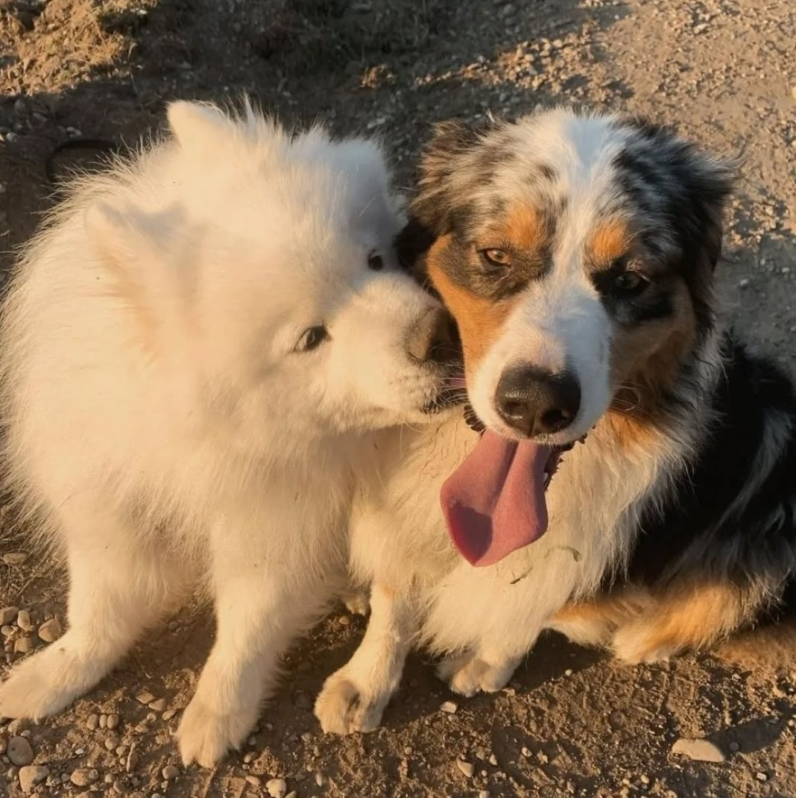
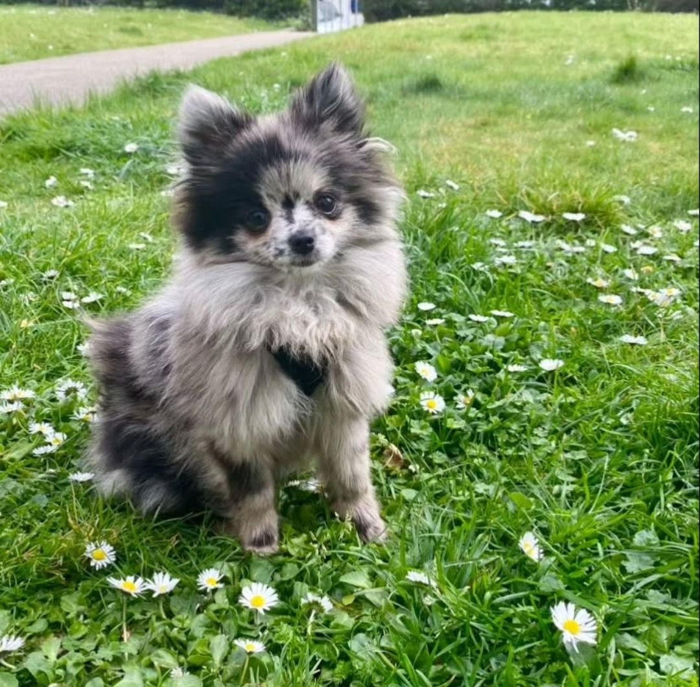
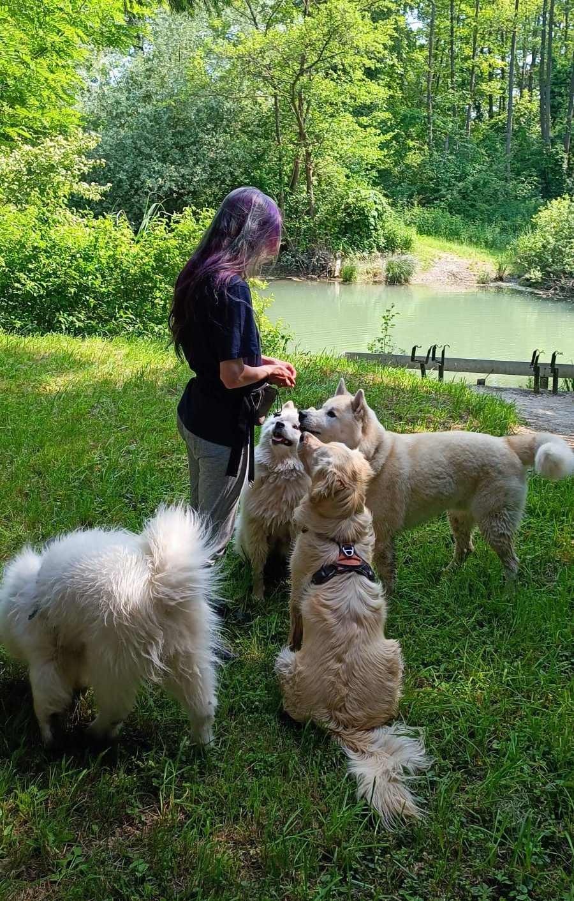
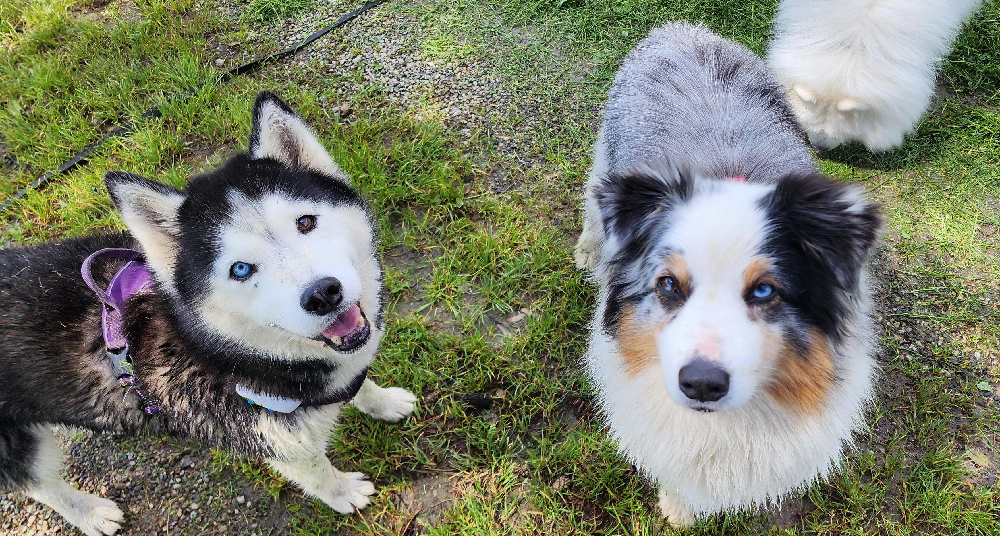
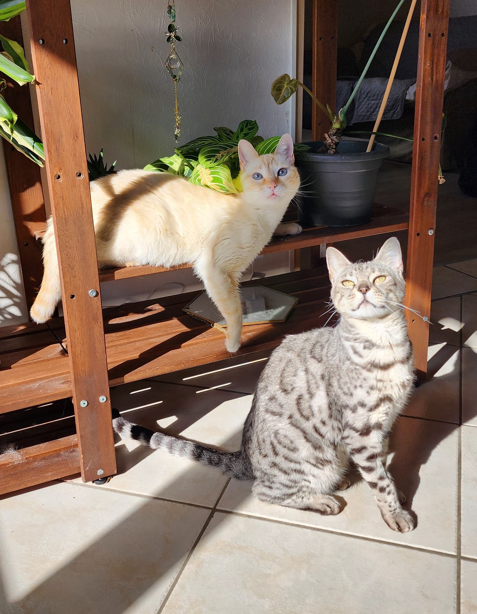
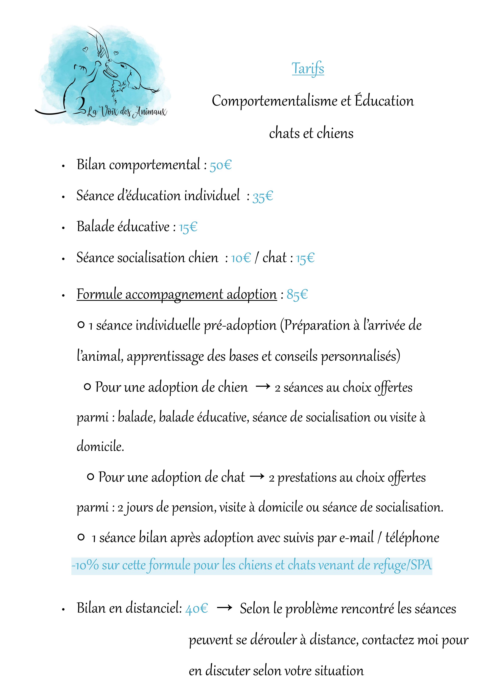
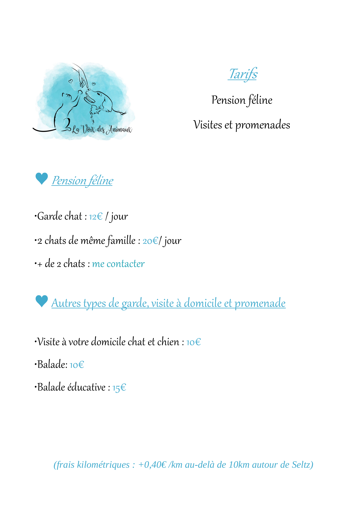
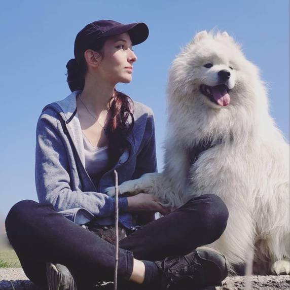

Avec des méthodes bienveillantes et positives, j'accompagne toutes les familles quelque soit le problème rencontré. Chaque contexte à ses spécificités, et en travaillant main dans la main aussi bien avec les humains qu'avec les animaux, chaque problème trouve sa solution.
Que votre chat soit agressif, destructeur, peureux, pas propre, ait des soucis de cohabitation avec un autre animal, tous les problèmes peuvent se résoudre avec les méthodes positives !
Vos félins sont accueillis dans une grande pièce dédiée à eux avec arbres à chats, plateformes murales, cachettes et jeux d'intelligence.
Service de balade classique ou éducative adapté aux besoins de votre chien : se dépenser, jouer, travailler l'éducation en extérieur.
Apprentissage des ordres de base : assis, couché, rappel, marche en laisse. Séances d'1h avec exercices pratiques adaptés.
Accompagnement et conseils lors du processus d'adoption d'un animal avec suivi post-adoption pour faciliter l'intégration.
Un comportementaliste est une personne qui va vous apporter son aide pour tout trouble du comportement que votre chien ou votre chat peut rencontrer, il est également là pour vous aiguiller et vous aider lorsque que vous avez des questions, des craintes ou si vous souhaitez être accompagné pendant le processus d'une adoption.
Avec moi tout outil que l'on appelle coercitif ne sera pas utilisé, autrement dit collier étrangleur/électrique, licol, punition, etc n'auront pas leur place dans mon travail. Si vous utilisez ces outils là n'hésitez pas à me contacter, nous travaillerons ensemble pour arriver à notre but : Régler un problème en supprimant ces instruments.

Newton et Pongo
Un bilan comportemental est un rendez-vous d'environ 2h lors duquel je me rends à votre domicile pour que nous discutions du ou des problèmes que vous rencontrez avec votre animal. Pendant ce rendez-vous nous allons beaucoup discuter mais aussi mettre en situation le problème afin que je vous donne les premières analyses et pistes de solutions pour le régler.
Après ce rendez-vous je vous enverrai un compte rendu écrit pour résumer chaque point afin que vous ayez un support (Et oui, deux heures c'est long, difficile de tout retenir !), à la fin de celui-ci je vous propose un suivi avec les prestations adéquates à votre situation.

Patate
Vous envisagez d'adopter un animal et vous voulez mettre toutes les chances de votre côté pour que tout se passe bien ? Vous avez des questions ou ne savez pas par où commencer pour trouver le chien ou le chat qui vous conviendra le mieux ? Je propose une formule d'accompagnement d'adoption qui est faite pour !
Grâce à cette formule vous aurez :
Il y a -10 % sur cette formule pour les chiens et chats venant de refuges/SPA
Un éducateur canin est une personne qui va vous aider dans tout ce qui est éducation, apprendre le assis, couché, le rappel, la marche en laisse, etc.

Carole avec Romy, Nanuq, Pixel et Newton
Une séance d'éducation est un rendez-vous d'environ 1h où nous mettrons en pratique les différents exercices et solutions adaptées pour apprendre ce que vous souhaitez à votre animal.
Vous souhaitez parfaire certains points de travail avec votre chien lors des balades ? Vous pouvez me contacter pour que je vienne faire une promenade travail avec lui. Ce service est possible uniquement après un bilan comportemental pour que nous puissions aborder en détail les problèmes et que je puisse vous expliquer comment mettre en pratique vous aussi les exercices au quotidien !

Lilas et Maya
Vous n'avez pas le temps de promener votre chien que ce soit ponctuel ou récurrent ? Le service de balade que je propose est fait pour vous ! Je me rends à votre emplacement et m'occupe de promener votre chien (Pendant le temps que vous souhaitez, 1h maximum). Chaque chien étant différent j'adapte la balade selon ses besoins et vos demandes, il a besoin de courir ? De jouer ? De se dépenser olfactivement ? De se promener calmement ? Tout est possible. Votre animal aura toujours un GPS sur lui et ne sera détaché que si vous le souhaitez, si il a l'habitude et si je me sens à l'aise avec votre toutou pour le faire. Je prends avec moi une longe de 20m pour les balades dans la nature si votre chien ne peut pas être détaché pour qu'il ait un maximum de liberté.
Vous souhaitez parfaire certains points de travail avec votre chien lors des balades ? Vous pouvez me contacter pour que je vienne faire une promenade travail avec lui. Ce service est possible uniquement après un bilan comportemental pour que nous puissions aborder en détail les problèmes et que je puisse vous expliquer comment mettre en pratique vous aussi les exercices au quotidien !
Visite de la pension féline
Vous devez vous absenter et faire garder votre ou vos chats dans un lieu sécurisé et adapté à ses besoins ? C'est à mon domicile que vos félins sont accueillis dans une grande pièce dédiée à eux. A l'intérieur se trouve plein d'arbres à chats, de lits douillets, de plateformes murales, des cachettes pour les plus timides, des jeux d'intelligence et d'occupation, de l'herbe à chat et des friandises, etc.
Je n'accepte qu'une famille à la fois donc vos chats seront tranquilles sans autre animaux inconnus avec eux. Il y a dans la pièce deux caméras de surveillance pour que je puisse surveiller vos petits compagnons entre les nombreuses visites que je ferai.
Votre animal devra être identifié, à jour de ses vaccins et sans maladie contagieuse, il devra également être vermifugé. Les chats non castrés/stérilisés, étant FIV, ou ayant besoin d'un traitement sont acceptés sans frais supplémentaires, la litière et le brossage sont évidemment compris aussi dans le prix.
Vous devez par contre fournir la nourriture et emmener le carnet de santé de votre chat, vous pouvez ensuite prendre avec vous tout ce que vous estimez important pour la sérénité de vos félins !
Voir détails et tarifs cliquez ici

Nova et Onyx
Cliquez sur les images pour les agrandir et voir les détails


Pour plus d'informations ou pour réserver une prestation, contactez-moi
N'hésitez pas à me contacter pour toute question ou pour prendre rendez-vous. Je serai ravie de vous accompagner dans votre relation avec votre compagnon à quatre pattes.
Mes services sont disponibles dans un rayon de 25-30 km autour de Seltz, exclusivement en France.
Cette zone couvre notamment :

Carole & Newton
Je m'appelle Carole et étant passionnée par le monde animal depuis toute petite, j'ai toujours su que je me dirigerais vers un métier qui me permettrait de travailler avec eux. Après m'être rendu compte de la souffrance des animaux dans le monde, j'ai décidé dès mon enfance de me lancer dans le combat pour eux et pour leur bien-être.
C'est en voyant au fil des années que la douleur physique et psychologique des animaux concernait aussi nos animaux de compagnie que j'ai décidé de faire de mon métier l'aide que je pouvais leur apporter ! Après avoir été certifié par l'ACACED et en commençant à travailler en tant que comportementaliste j'ai compris que nos compagnons n'étaient pas les seuls à souffrir, et que bien souvent leur humain souffrait énormément des situations compliquées que vivaient leurs animaux.